Introduction to Organic Chemistry
In the early nineteenth century, scientists classified all known compounds into two categories: Organic compounds were derived from living organisms (plants and animals), while inorganic compounds were derived from nonliving sources (minerals and gases). This distinction was fueled by the observation that organic compounds seemed to possess different properties than inorganic compounds. Organic compounds were often difficult to isolate and purify, and upon heating, they decomposed more readily than inorganic compounds. To explain these curious observations, many scientists subscribed to a belief that compounds obtained from living sources possessed a special “vital force” that inorganic compounds lacked. This notion, called vitalism, stipulated that it should be impossible to convert inorganic compounds into organic compounds without the introduction of an outside vital force. Vitalism was dealt a serious blow in 1828 when German chemist Friedrich Wöhler demonstrated the conversion of ammonium cyanate (a known inorganic salt) into urea, a known organic compound found in urine:
| NH4OCN Ammonium cyanate (Inorganic) | Heat ⟶ | Urea Organic |
Over the decades that followed, other examples were found, and the concept of vitalism was gradually rejected. The downfall of vitalism shattered the original distinction between organic and inorganic compounds, and a new definition emerged. Specifically, organic compounds became defined as those compounds containing carbon atoms, while inorganic compounds generally were defined as those compounds lacking carbon atoms.
Organic chemistry occupies a central role in the world around us, as we are surrounded by organic compounds. The food that we eat and the clothes that we wear are comprised of organic compounds. Our ability to smell odors or see colors results from the behavior of organic compounds. Pharmaceuticals, pesticides, paints, adhesives, and plastics are all made from organic
compounds. In fact, our bodies are constructed mostly from organic compounds (DNA, RNA, proteins, etc.) whose behavior and function are determined by the guiding principles of organic chemistry. The responses of our bodies to pharmaceuticals are the results of reactions guided by the principles of organic chemistry. A deep understanding of those principles enables the design of new drugs that fight disease and improve the overall quality of life and longevity. Accordingly, it is not surprising that organic chemistry is required knowledge for anyone entering the health professions.